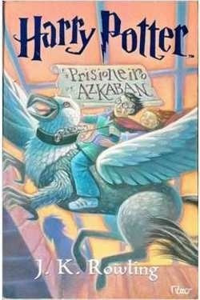

Meu nome é Gabriela Ribeiro, tenho 27 anos e adoro perguntas. Quando eu era pequena passava vários fins de semanas na casa da minha madrinha. A filha dela tinha um Pense Bem, um brinquedo que se assemelha a um computador. Eu ficava horas fazendo as atividades e respondendo aos livros de perguntas que acompanhavam o Pense Bem. Eu achava aquilo simplesmente genial. Mais tarde, quando terminei o ensino médio, tinha o sonho de entrar em uma universidade pública. Participei de alguns cursinhos populares e finalmente consegui. O período que vivi na UFABC foi incrível. Foram dois anos de muito aprendizado e entendimento sobre interdisciplinaridade. Eu não cheguei a terminar o curso e lembro que quando cheguei para falar para minha mãe que ia cancelar a matrícula, ela só me fez um pedido: nunca parar de estudar. Ela, mulher nordestina, vinda do interior do Pernambuco, não teve muitas oportunidades, mas ela queria que eu as tivesse. Um mês depois minha mãe faleceu. Foi um momento terrível. Eu nunca tinha vivido algo tão perturbador na vida. De repente, me vi como uma mulher repleta de responsabilidades pessoais, familiares e trabalhistas. Foi difícil continuar, mas sempre me lembrava da minha mãe. Naquele mesmo ano, eu tinha me inscrito pro Enem e fiz a prova no fim do ano. Consegui uma bolsa pelo ProUni e fui estudar RTV. Digo a vocês que talvez a área de audiovisual seja a área onde mais se precisa trabalhar em grupo. Foram 4 anos de muito, mas muito aprendizado e parceria. Por fim, me vi na necessidade de mudar. Pra onde? Recapitulei a minha vida. Aquele momento na infância foi só o início da minha conexão com a tecnologia. Eu sou aquela pessoa que as pessoas recorrem quando precisam de ajuda com tecnologias. "Ei, Gabi, formata meu computador? Arruma minha impressora? A tela do meu celular quebrou, você conserta?" Eu não me vi com outra opção senão entrar na área de tecnologia. E cá estou. Hoje, mais do que adorar porquês, eu gosto de respostas. Se pudesse dizer em poucas palavras quem sou, diria: Desenvolvedora Full Stack Java Junior, curiosa sobre tudo, amante de esportes (apesar de um pouco sedentária), disposta a aprender e a evoluir um pouco mais a cada dia.
Sem fui muito ligada à música, ao cinema e aos livros. Tudo que remete a cultura aquece o meu coração. Umas das minhas cantoras favoritas é a Pitty. Acompanho sua música desde os 9 anos. De certa forma, a sua discografia moldou parte de quem eu sou. "Sete Vidas" é uma música que me diz muito.
No cinema, filmes conseguem me tocar com muita intensidade. Um dos meus favoritos é "A Vida é Bela", filme dirigido por Roberto Benigni, que também atua como protagonista e a sua atuação é majestosa. O filme é de 1997 e em 1999 levou os Oscar de Melhor Filme Estrangeiro, Melhor Ator e Melhor Trilha Sonora.

Um livro que me marcou muito foi "Harry Potter e o Prisioneiro de Azkaban". A partir desse livro eu comecei a mergulhar no mundo da leitura. Eu costumava lê-lo assim que terminava a lição durante a 3ª série. Minha professora daquele inesquecivel ano de 2003, Maria Elisa, permitia que eu lesse. Sou extremamente grata a ela por isso.
